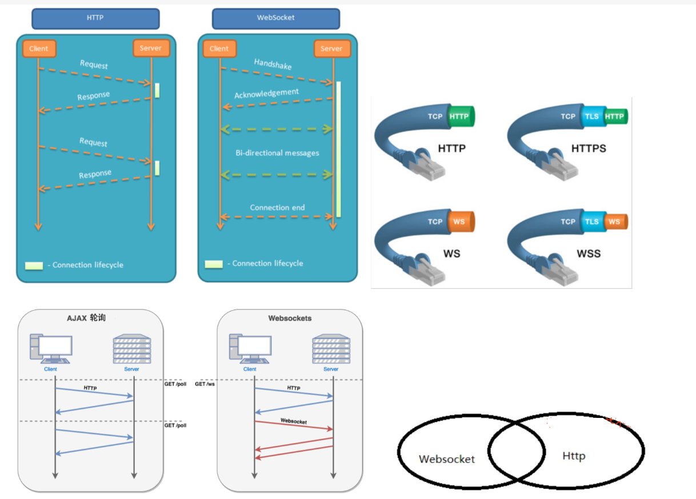

Ashish Ranjan
Project
About Us
Contact Us
What is WebSocket and How It Works
WebSocket is a communication protocol that enables real-time, bi-directional communication between clients and servers. In this article, we'll explore what WebSocket is and how it works, including its advantages and key components. Join us as we dive into the world of WebSocket and its exciting capabilities.
What is WebSocket
WebSocket is a protocol used to create real-time, bi-directional communication channels in web applications. Unlike traditional HTTP requests which are typically one request followed by one response, WebSocket can establish a persistent connection that allows the server to push data to the client in real-time while also receiving data from the client. Compared to traditional polling or long polling, WebSocket significantly reduces network traffic and latency, improving the efficiency and speed of data transmission. It is particularly useful for developing real-time web applications and online games. What is a WebSocket connection? WebSocket establishes a two-way communication channel between the browser and server, enabling the server to proactively push messages to the browser without the need for the browser to continuously send requests to the server. The principle involves creating a "socket" between the browser and server and transmitting data via a handshake. As the protocol requires support from both the browser and server, it needs to be assessed and handled in the application.

WebSocket is a bidirectional communication protocol based on TCP introduced with HTML5, known for its compatibility with HTTP, low overhead, and efficient communication. WebSocket establishes a persistent connection between the client and server for real-time bidirectional data transmission. WebSocket's main feature is the establishment of a persistent TCP connection that remains until the client or server initiates a termination request. WebSocket informs the server of the desire to upgrade the protocol from HTTP/1.1 to WebSocket protocol through the Upgrade header information in HTTP/1.1. WebSocket is built on top of the HTTP protocol, and all WebSocket requests are sent through the standard HTTP protocol, which is then recognized as a specific header information Upgrade on the server side. HTTP is essential to WebSocket, as WebSocket uses Sec-WebSocket-Key encryption during the handshake and SHA-1 signature. Once the WebSocket connection is established, the client and server can send binary streams or Unicode strings to each other. All data is masked, with the mask value generated randomly by the server. Before sending the data, it must be masked to prevent malicious tampering by third parties. It is worth noting that WebSocket's communication protocol is based on frames (data packets). A complete data packet can be divided into multiple frames, each of which includes a portion of the data and header information.